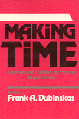

<body bgcolor="#FFFFFF" text="#000000" link="#0000FF" vlink="#CC0000" alink="#CC0000"><center><hr width="350" size="1" align="center" noshade>Four ethnographic studies of the social and cultural construction of time<hr width="350" size="1" align="center" noshade><p><a href="https://cdcshoppingcart.uchicago.edu/Cart/ChicagoBook.aspx?ISBN=9780877225355&&PRESS=temple" target="_top">Buy this book!</a> | <a href="https://cdcshoppingcart.uchicago.edu/Cart/Cart.aspx?PRESS=temple" target="_top">View Cart</a> | <a href="https://cdcshoppingcart.uchicago.edu/Cart/Cart.aspx?PRESS=temple" target="_top">Check Out</a></p><p></p></center><!--none//--><h1>Making Time</h1>
<H2>Ethnographies of High-Technology Organizations</H2>
<h3>edited by Frank A. Dubinskas</h3>
<P>cloth 0-87722-535-4 $34.95, Apr 88, <FONT COLOR=#990033>Out of Stock Unavailable</FONT>
<BR> 238 pp
</P><p>Time is a fundamental symbolic category for understanding the orderliness of social life. This volume presents four field-based ethnographic studies of the social and cultural construction of time in modern high-technology organizations. They show how time and the constitution of scientific and technical knowledge are intimately linked. The essays describe and analyze differences in the ways knowledge bases and technical expertise are built in high-energy physics laboratories, hospital radiology departments, solar energy cell design jacket, and start-up biotechnology firms. They illuminate the central roles of time in these construction processes.
<p>The multiple patterns for making and interpreting time in these scientific, technical, medical, and managerial communities challenges the common Western assumption of cultural uniformity in modern science. "Time" <I>is</I> and means different things in each of these high-technology environments. The essays also examine the special role of technical artifacts like machines as central symbolic nexus in the social relations of constructing time. Machines and their management are crucial to the interactions within each community. They shape the temporal, technical, and scientific character of professional work; they mediate and articulate collaborations between technical groups; and they provide a focus for intra- and extra-group conflict around their use.
<p>By eliciting and interpreting the diversity of times in advanced technological environments, these studies break new ground in the ethnography of science and technology and the sociology of knowledge. At the same time, they provide detailed examples and insight into vexing issues in the management of advanced scientific and high-technology organizations.
<BR>&nbsp;<h2>Contents</h2><P>
<p>1. Cultural Constructions: The Many Faces of Time &#150 Frank A. Dubinskas
<br>2. Discovering Machines: Nature in the Age of Its Mechanical Reproduction &#150 Sharon Traweek
<br>3. Engineering Design Process &#150 Louis L. Bucciarelli
<br>4. On Technology Time and Social Order: Technically Induced Change in the Temporal Organization of Radiological Work &#150 Stephen R. Barley
<br>5. Janus Organizations: Scientists and Managers in Genetic Engineering Firms &#150 Frank A. Dubinskas
</P><BR>&nbsp;<H2>About the Author(s)</H2>
<P><b>Frank A. Dubinskas</b> is Assistant Professor of Organization Studies in the School of Management at Boston College.</P>
<P>Contributors: Sharon Traweek, Louis L. Bucciarelli, Stephen R. Barley, and the editor.</P>
<BR><H2>Subject Categories</H2>
<p><A HREF="/tempress/anthropology.html" TARGET="_top">Anthropology</a>
<BR><A HREF="/tempress/sociology.html" TARGET="_top">Sociology</a>
</p>
<p align="center"><a href="https://cdcshoppingcart.uchicago.edu/Cart/ChicagoBook.aspx?ISBN=9780877225355&&PRESS=temple" target="_top">Buy this book!</a> | <a href="https://cdcshoppingcart.uchicago.edu/Cart/Cart.aspx?PRESS=temple" target="_top">View Cart</a> | <a href="https://cdcshoppingcart.uchicago.edu/Cart/Cart.aspx?PRESS=temple" target="_top">Check Out</a></p><p><font face="Arial" size="1"><a href="copyright.html" onMouseOver="window.status='Web Copyright Policy';return true;" onMouseOut="window.status=''" title="Web Copyright Policy">&copy;</a> 2015 <a href="http://www.temple.edu" target="new" onMouseOver="window.status='Link to Temple University home page';return true;" onMouseOut="window.status=''" title="Link to Temple University home page">Temple University</a>. All Rights Reserved. http://www.temple.edu/tempress/titles/457_reg.html</font></p>